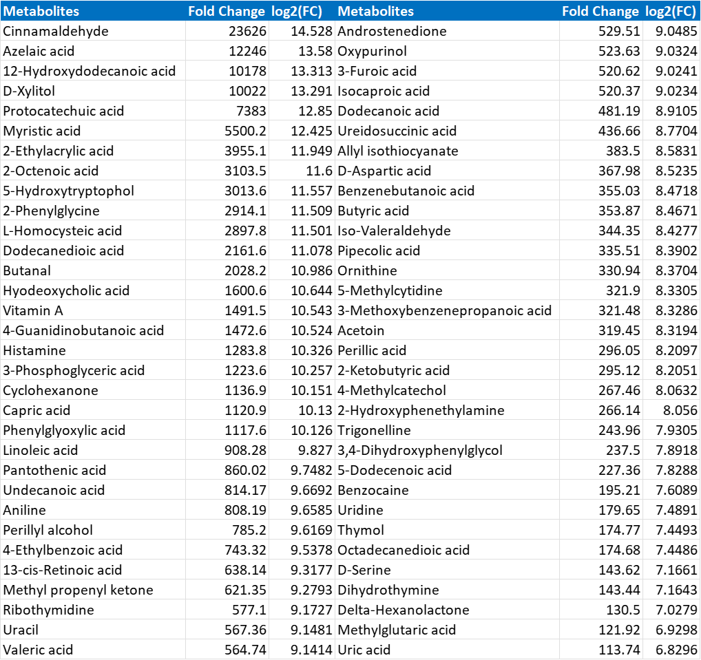

Supplementary Information
Ishita Joshi| Abstract ID:CBC-AB-8966 | GBRC, Gandhinagar
Pathway results

Upregulated and downregulated metabolites after treatment


References
- 1. Bartikoski, B. J., De Oliveira, M. S., Do Espírito Santo, R. C., Dos Santos, L. P., Dos Santos, N. G., & Xavier, R. M. (2022). A Review of Metabolomic Profiling in Rheumatoid Arthritis: Bringing New Insights in Disease Pathogenesis, Treatment and Comorbidities. Metabolites, 12(5), 394. https://doi.org/10.3390/metabo12050394
- 2. Cao, S., Chen, X., Schett, G., & Bozec, A. (2020). SAT0001 L-ARGININE SUPPLEMENTATION AMELIORATES BONE EROSION IN RHEUMATOID ARTHRITIS THROUGH INHIBITION OF RANKL/RANK/TRAF6 PATHWAY AND REPROGRAMMING OSTEOCLAST METABOLISM. Annals of the Rheumatic Diseases, 79, 931.
- 3. Nagana Gowda, G. A., Pascua, V., Hill, L., Djukovic, D., Wang, D., & Raftery, D. (2024). Discovery of Hypoxanthine and Inosine as Robust Biomarkers for Predicting the Preanalytical Quality of Human Plasma and Serum for Metabolomics. Analytical chemistry, 96(39), 15754–15764. https://doi.org/10.1021/acs.analchem.4c03719
- 4. Sasaki, C., Hiraishi, T., Oku, T., Okuma, K., Suzumura, K., Hashimoto, M., Ito, H., Aramori, I., & Hirayama, Y. (2019). Metabolomic approach to the exploration of biomarkers associated with disease activity in rheumatoid arthritis. PloS one, 14(7), e0219400. https://doi.org/10.1371/journal.pone.0219400
- 5. Scherlinger, M., & Tsokos, G. C. (2021). Shortage of aspartate in mitochondria fuels arthritis. Nature immunology, 22(12), 1474–1476. https://doi.org/10.1038/s41590-021-01069-y
- 6. Song, C., Liu, Z. J., Xu, B., Zou, R., & Hu, W. (2025). The Role of Uridine in Health and Disease. Journal of inflammation research, 18, 10163–10179. https://doi.org/10.2147/JIR.S506308